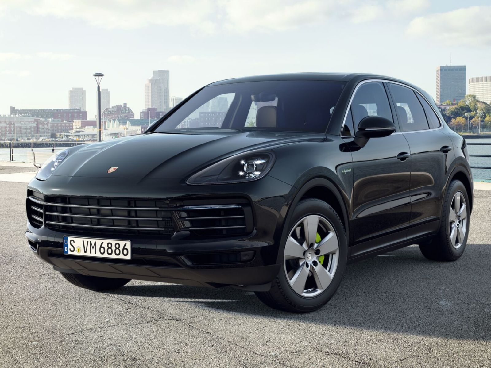
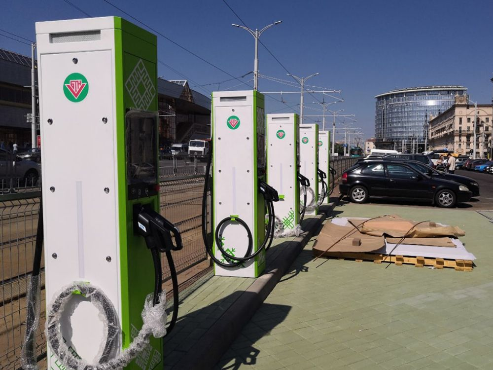
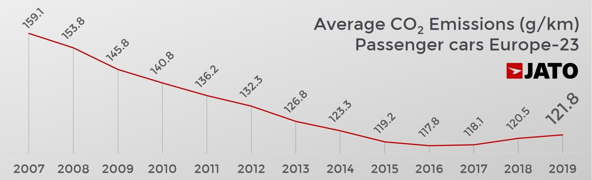

Невозможно игнорировать важность состояния экологии для отдельного человека и его семьи, для общества в целом. Состояние экологии сильно зависит от честного и открытого ведения дел коммерческими компаниями, которые могут вырабатывать сотни тонн различных отходов в год. Многие сейчас внимательно следят за правилами утилизации. Также каждый человек может вносить посильный вклад в экологию каждый день благодаря прогрессу и благам цивилизации.

В продажу поступили модификации автомобилей с
электродвигателями
Один из ключевых природных ресурсов, которыми мы пользуемся каждую минуту — это воздух. От его состава напрямую зависит наше самочувствие, показатели крови, качество жизни. Далеко не последнюю роль также играют качество проточной воды, качество овощей и фруктов, которые выращиваются местными фермерствами в почве. Таким образом экология каждый день влияет на благополучие человека, его продуктивность; плохая экология забирает шансы на нормальное творческое и рабочее развитие.

Зарядные станции в центре Минска
Согласно отчёту английского агентства JATO Dynamics, с начала тысячелетия уровень выбросов углекислого газа в атмосферу постепенно уменьшается. Это происходит главным образом благодаря обязыванию автопроизводителей продавать более экологичные автомобили и научно-техническому прогрессу, сглаживающему разницу в использовании автомобиля с двигателем внутреннего сгорания и электродвигателем: так, электродвигатели нуждаются в меньшем количестве расходных материалов (например, свечей зажигания, в которых электродвигатель не нуждается), электричество стоит дешевле горючего топлива для одинакового пути. Также электромобили обладают преимуществами над классическими автомобилями: они практически бесшумны, имеют лучшую динамику за счёт того, что максимальный крутящий момент достигается даже при малых оборотах, и лучше управляются из-за смещённого вниз центра тяжести благодаря батарее.

Статистика JATO Dynamics
Именно по этой причине мы запустили в продажу электромобили, которые являются намного более экологичными и экономичными последователями автомобилей с двигателями внутреннего сгорания. Аккумуляторы для них производятся из таких безвредных для природы материалов, как литий, добывающийся без применения детского труда, а технология переработки отслуживших аккумуляторов отлажена практически до идеала. С электромобилями вы сможете забыть о повышении цен на нефть. Более того, приобретение вами электромобиля приближает человечество к отказу от загрязняющих почву, воду и воздух видов топлива. Будьте экологичными!